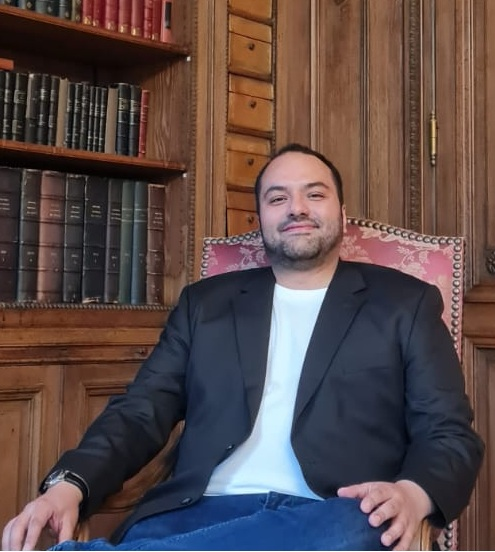

I am Coordinator of the Sensores Sociales project at MIDE UC, Pontificia Universidad Católica de Chile, and a Doctoral Researcher at the RTG Dynamics graduate program at Humboldt-Universität zu Berlin, jointly coordinated with the Hertie School of Governance. My research investigates how social networks mediate the relationship between institutions, civil society, life events, and political attitudes. Using comparative and longitudinal data, I explore how inequality and welfare regimes shape the structure and composition of individuals' personal networks—and, in turn, how these networks influence interpersonal trust and broader political orientations.
Between March and May 2025, I was a visiting researcher at the Swedish Institute for Social Research (SOFI) at Stockholm University, within the Social Policy Unit.
I hold a Master's in Sociology from the Pontifical Catholic University of Chile and a Bachelor's from the University of Chile. Prior to my doctoral studies, I was Technical Coordinator of ELSOC — COES, specialising in survey design, panel data, and network analysis.
Siempre pensé que eso del Halloween era una de esas fiestas que uno veía en las películas gringas. Con el tiempo, me resigné a que también aquí terminaríamos disfrazando a los perros, celebrando el Thanksgiving y quién sabe qué más. Pero mi señora es distinta: ella todavía cree en las pequeñas cosas.
—"Viejo, hay que comprar dulces, vienen los niños"— me dice cada año, con esa voz que ya no necesita levantar.
Yo le digo que sí, que sí mi vida. Que mientras ella pone las telarañas de plástico y las calabazas de papel, yo voy a ver mi partido, bajito, para no molestar. Me gusta verla moverse por la sala, colgando hilos de colores, como si en cualquier momento fueran a aparecer las risas en el pasillo.
A veces hasta jugamos. Ella finge asustarme con una máscara ridícula, y yo le hago un gruñido de zombie torpe. Reímos los dos. Nos salen las arrugas más hondas cuando reímos.
El partido avanza lento. Afuera, el viento mueve los adornos de la ventana y hace un sonido hueco, como de suspiro. Cierro los ojos un rato.
Cuando despierto, la televisión está en silencio. La casa huele a azúcar y a polvo viejo. Miro el reloj: ya pasó la hora. Salgo al pasillo, con la bolsa de dulces aún cerrada. No hay pasos, no hay risas, no hay nadie. Las luces de los departamentos están apagadas, y las calabazas de papel se mueven solas, golpeando el vidrio.
Regreso al sillón y me quedo mirando los dulces.
"Parece que este año no vinieron", le digo.
Ella sonríe con esa tristeza dulce de las cosas que se saben desde antes.
"Quizás el próximo, viejo. Quizás el próximo."
Y ahí nos quedamos, los dos, con los dulces sobre la mesa, viendo el reflejo de nuestras sombras moverse en la ventana. Afuera no hay niños, pero dentro, por un momento, seguimos jugando.